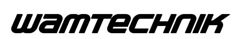

KITT4SME platform
KITT4SME project specifically targets European SMEs and mid-caps to provide them with scope-tailored and industry-ready hardware, software and organisational kits, delivered as modularly customisable digital platform, that seamlessly introduce artificial intelligence in their production systems.
The KITT4SME (platform-enabled KITs of arTificial intelligence FOR an easy uptake by SMEs) specifically targets European SMEs and mid-caps to provide them with scope-tailored and industry-ready hardware, software and organisational kits, delivered as modularly customisable digital platform, that seamlessly introduce artificial intelligence in their production systems.
Uptake of the resulting packages and of the provided devices is strongly supported by the clear characterisation and market readiness of the individual components as well as by the platform grounding on the already established RAMP Marketplace. Leverage on the network of Digital Innovation Hubs, three of which are represented in the consortium, ensure that KITT4SME are widely distributed to a wide audience of companies in Europe. Seamless adoption of the customised kits is made possible by a Powered by FIWARE infrastructure that flawlessly combine Factory systems (such as MES and ERP), IoT sensors and wearable devices, robots, collaborative robots and other Factory data sources with functional modules capable to trigger data-driven value creation.
The KITT4SME concept comes into being from the acknowledge that companies are unprepared and inadequately exposed to extremely complex and widely diverse digital solutions in the field of artificial intelligence that are often much too broad in scope and relentless in dictating their own objectives instead of focusing on the issues a company really faces. Yet, whereas big companies have capitals and resources to research and build platforms internally, SMEs struggle in finding solutions that are fitting to their needs and, even when exposed to them, have to bear significant financial risks to embrace them while lacking the competences for a first-right selection. Lag in the digitisation race for them is not a system by-product it is a designed feature.
KITT4SME offer an open source platform for uptake of AI solutions in manufacturing for SMEs. The architecture is based on the currently best-in-class open source platform for IoT: FIWARE. The figure illustrates the different platform layers (components in the mid-blue boxes are provided by FIWARE). FIWARE is a scalable open source component framework that can be composed to integrate, handle and manage context information from different data sources, distribute that KITT4SME data and stream it into involved external components for persistence as well as for AI-based processing aims. Computed results can then be integrated back enabling actuation and the enrichment of the current context.

The architecture from the project's software services POV, is the following:

Application services
| Name | Demo | Description | Type | Partner |
|---|---|---|---|---|
| AI for Quality Inspection Systems | https://kitt4sme.collab-cloud.eu/docs | AI with data augmentation for continuous evaluation, fine tunning and re-configuration of quality control. | AI solution | R2M |
| Vision for Quality Excellence | No public demo available | Deep learning image processing that inspects and evaluates the quality of manufacturing parts. | AI solution | Rovimatica |
| Shop Floor Anomaly Detection System | https://kitt4sme.collab-cloud.eu/sads | Machine Learning solution for real-time welding point anomaly detection and welding output Joules forecasting. | AI solution | Ginkgo |
| Insight Generator | No public demo available | It provides pivotal insights to optimise manufacturing systems. Insight Generator uses machine-learning techniques to analyse historical data and determine the most suitable configuration to optimise a manufacturing system depending on user-defined KPIs. | AI solution | CSIC |
| Manufacturing Process Management System | No public demo available | Orchestrates humans and machines involved in a production line by keeping a model of the production process to timely assign tasks and coordinate work. | AI solution | CSIC and European Dynamics |
| Fatigue Monitoring System | https://kitt4sme.collab-cloud.eu/dazzler/demo/-/fams | The FaMS component detects possible psychological (e.g., loss of attention, mental fatigue) or physical (e.g., tiredness) discomfort or harmful situations for a worker. The situations identified by this component can be targeted by other modules to trigger short term intervention, i.e., intervention that can be executed to support a specific worker during the current working shift. | AI solution | SUPSI |
| Intervention Manager | https://kitt4sme.collab-cloud.eu/intervention-manager | Service to define intervention rules for orchestrating a production system. | AI solution | SUPSI |
| Production System Profiler | http://kitt4sme.collab-cloud.eu:8080/ProductionSystemProfiler/Step1 | Identifies worker skills and factory needs at various levels whole plant, production line, workplace. | Digital competences and platform service evolution | HOLONIX and Warsaw University of Technology |
| Worker Profiler | http://kitt4sme.collab-cloud.eu:8080/WorkerProfiler | A web app that suggests training programmes depending on worker's skills and aspirations as well their role in the company | Digital competences and platform service evolution | HOLONIX and Erre Quadro |
| Catalogue of Qualified Training Experiences | Competence Matchmaking Tool (CMT) is a software that matches worker profiles to training experiences/courses based on workers' competence/skill gaps and the skills offered by training experiences and courses. | Dynamic and comprehensive catalogue of training experiences to be used by the matchmaking tool. | Digital competences and platform service evolution | Erre Quadro |
| Competence Matchmaking Tool | http://kitt4sme.collab-cloud.eu:8081 | A web app that suggests personalised staff training in order to increase staff productivity and, consequently, production line efficiency. | Digital competences and platform service evolution | SUPSI and Erre Quadro |
RAMP
| Name | Demo | Description | Partner |
|---|---|---|---|
| Marketplace | https://ramp.eu | A customisation of the Robotics and Automation Marketplace for the specific needs of the KITT4SME project | European Dynamics |
| Data sheets | https://kitt4sme.collab-cloud.eu/datasheets/index | Digital data sheets for module composability | VTT |
| SME-Oriented Platform Configurator | https://kitt4sme.collab-cloud.eu/platform-configurator | AI solution | SUPSI |
| Adaptive Questionnaire | https://kitt4sme.collab-cloud.eu/aq | AI-powered questionnaire to determine the most suitable service kit for a manufacturing company | SUPSI |
Infrastructure services
| Name | Demo | Description | Partner |
|---|---|---|---|
| Sensing Layer | Sensing Layer is an Android .apk file. There is not a public demo. | Sensing Layer implements access points, manipulation, storing and routing of the data regarding workplace and workers and coming from different and multiple sources like wearable devices and environment sensors. | HOLONIX |
| FIWARE middleware | No public demo available | Powered by FIWARE IoT communication, data exchange and interoperability platform | Martel |
| QuantumLeap | No public demo available | Service for storing and querying spatial-temporal IoT data | Martel |
Company X - E-bike manufacturer
The Problem
Company X, an e-bike manufacturer company based in Poznań (PL), employs 50 workers, and operates three production lines, namely motor, chassis, and wheels. Each line is staffed by 1 to 10 workers, depending on the changing production demand and each worker can work in each of the 3 lines.
- Line 1 - Motor: The motor line involves 10 steps, starting from the machining (using lathes, milling machines, and drill presses), followed by assembly, testing and quality control.
- Line 2 - Chassis: The chassis line involves 7 steps, starting from the tube bending, where the tubes that will make up the chassis are bent to the correct angles and shapes, followed by welding, frame alignment, surface treatment and quality control.
- Line 3 - Wheels: The wheels line involves 6 steps, starting from the rim production, through a process of extrusion, followed by the production of spokes and the hub, the assembly, testing and finishing. The final step involves the assemble of all the parts and the quality control which is done with an automated machine. Finally, workers are provided a Standard Operating Procedure (SOP) for the production operations.
- With the wellbeing of their operators
- With the HR department reported elevated levels of employee fatigue and stress
- Increased absenteeism rate
- Decreased productivity
The COO, Jane Doe, has decided to take care of the challenge above. However, the method of identifying the most tiring work cells and shifts, is very prone to biased results: asking it to the workers will not reveal it, since the workers will be tending to claim that “their work cell is the most critical and the tiring one” and manually observing the work cells will lead to subjective assessment of the observer. Besides, the method should reveal the identity of the worker, leading to a discrimination or an unfair assessment of the worker based on their fatigue levels.
To get to the root of the problem, Jane wants to identify the most critical work cells that leads to high level of fatigue and low ergonomic level together and the most tiring shifts due to factors like the workload, timing, and intensity of the work, so to prioritize the most tiring work cells and shifts and to implement better ergonomic practices, investing in more comfortable equipment and tools, and scheduling breaks to give workers time to recharge.
The solution
Jane is undertaking an initiative to address the well-being concerns impacting her company, and she seeks a solution or a composition of solutions (kits) that is affordable and user-friendly. In her search for potential solutions, Jane is interested in exploring AI-based solutions or composition of them. As a result, she searches for “AI kits for SMEs” and discovers KITT4SME, which ranks among the top results of her Google search.
The outcome was a kit suggestion that includes FaMS, IM and the Sensing Layer. Jane, after a discussion with the Platform Manager, decided to deploy the kit. They arrange a visit to the company to integrate the solution into the company’s systems, train their personnel on how to use it, and they activate the kit. Once the kit has been activated, they conduct tests to ensure that data acquisition, extraction, synthesis, and reporting are functioning properly.
Once the integration and testing are complete, the solution provider leaves the company and receive the payment from KITT4SME after Jane approves that they have received the goods and services they have purchased. Each worker is equipped with wearable devices that collect his or her data, based on which the worker's fatigue is estimated. For privacy issues, it is not possible to visualize the information (and thus the fatigue) of the individual worker: only the values of average fatigue and number of workers for each line are known. Using the FaMS and the Sensing Layer, the dashboard displays the average fatigue level of each line, which is stored in the platform, ready to be fetched by IM.
Since the number of workers in the lines is constantly changing (workers going to and from break, workers starting or finishing their shifts), as well as the average perceived fatigue of the workers (depending on the number of operations they are performing and the time they are working), unbalanced situations will arise in which some lines will have more workers than needed and consequently different average levels of fatigue. Using the IM, the system reassigns the workers in two possible ways:
- Assigning fresh workers to ‘tiring lines’
- Collocating workers of ‘light lines’ to ‘tiring lines’
The outcome
For the Company X, the problem of identifying the most tiring work cells has been resolved: biased results based on the subjective opinion of the workers is avoided, yet the privacy of the workers is completely ensured.
With the dynamic job allocation based on the real-time fatigue values, the improvements began to take effect over time. Retaking the survey for the worker wellbeing and physical stress (NASA TLX and Borg CR), Jane’s workers reported feeling less fatigued and more energized, leading to higher levels of productivity and job satisfaction. In the long term, the high turnover rate was also reduced, as employees were more likely to stay in their roles and have higher job satisfaction. Jane realized that it was important not only to identify problems in the workplace, but to take action to solve them. By prioritizing the well-being of his workers, she was able to create a more positive work environment, leading to better results for both the employees and the factory. The workers are happy that their work is more balanced, and their fatigue levels are being monitored. The company is now considering using KITT4SME as a one-stop-shop to improve their productivity.
The solution provider has made a sale and gained a new customer. They can use the data received from the shopfloor to train their AI solution to give more accurate results without being able to identify the users. This success has encouraged them to utilize KITT4SME as a sales channel for their products.
For KITT4SME, the sale has resulted in a commission and a satisfied customer and suppliers, which highlights the benefits of using KITT4SME as a one-stop-shop.
Company Y - Car battery manufacturer
The problem
Company Y, a car battery manufacturer company based in Stuttgart (DE), employs 60 workers. The main product of the company is customized Li-Ion batteries. The plant is composed of 2 lines:
- Line 1: involves the preparation of the anode, the cathode, and the electrolyte, together with their assembly.
- Line 2: involves the sealing of the battery, the quality control, and the packaging.
The company recently went under a change in the products, by shifting from the manufacturing of lead batteries to Li-Ion batteries. Despite the big investment in the shopfloor and recently hired experienced personnel, the workers are now struggling to adapt to new processes and working methods which leads to increasing quality issues and high level of scraps.
Max Mustermann, the Quality Manager, has identified one process, the sealing of the battery, which is done with a special machine that the company have bought for the new batteries. For the quality control, a person manually checks the defects only in a small number of batteries, and the whole batch is considered OK when there were no defects seen in the checked batteries. It’s common that the worker finds some problems in the batch, which are mainly related with the welding spots, and interests not a small number of batteries.
To decrease the quality issues, Max decides to collect data manually from each production line, but this takes a lot of time, since the company lack of sensors for data collection at the time. In addition, the large amount of data collected was relatively useless due to the difficulty in understanding correlations between the collected data of different operations. Max also considers sending the workers to some trainings, hoping the upskilling the quality workers will help to decrease the quality issues, however, but the workers need guidance on finding the right courses, and the HR is continuously asking the quality department to deliver them a list of trainings they wish to receive within their training budget.
Max is determined to address the issues plaguing the company. Despite not being certain of the root cause of the problem, he embarks on a search for a cost-effective solution that can resolve his problem. While he was browsing through LinkedIn, he discovers the success story of detecting the shop-floor anomalies with SADS in KITT4SME, which proposes a very specific module. Intrigued, he uses the link to access the success story, and to the registration page of KITT4SME, and eventually find himself in RAMP, where he was asked to register with his company email and company information.
The solution
Max knows what he needs, he is impressed with the success story and has already identified the AI module he wants to use; therefore he opts out using the Adaptive Questionnaire. As a customer redirected from KITT4SME to RAMP, he checks the suitability of the solution with the KITT4SME Representative inside RAMP via a dialog Box and discovers that SADS and a combination of some connectors is the right solution for his needs. With the KITT4SME Representative, Max is convinced to purchase the composed kit.
The kit consists of 2 components: (i) SADS, a tool based on artificial intelligence that identifies the quality issues and make predictions about the future issues, and (ii) the Sensing Layer, a tool for connecting multiple devices to the KITT4SME platform.
Max, upon reviewing the costs and conditions of the proposed solutions and hardware, as well as the deployment and maintenance costs, he decides to accept the offer. After that, the user sends the configuration to the Module Manager for implementability analysis. The RAMP Integrator reviews the configuration, confirms the price and implementability of the solution. Once the payment is done, the RAMP Integrator deploys the solution to the KITT4SME platform.
After the payment is made, the Module Manager informs the solution provider and integrator company, which have been previously contacted by Max. They arrange a visit to the company to integrate the solution into the company’s systems, train personnel on how to use it, and activate the kit. Once the kit has been activated, they conduct tests to ensure that data acquisition, extraction, synthesis, and reporting are functioning properly. Once the integration and testing are complete, the solution provider and integrator company leave the company and receive payment from KITT4SME after approval has been obtained from Max. Using the SADS and the Sensing Layer , the system monitors the batteries welding spots after the sealing process.
Max has opted out from an intervention module, since he wants to identify and to predict the quality issues only and to save resources. Yet, a decision maker module which could provide intervention actions based on the sense pillar can always be added it in the future.
Max has opted out from an intervention module, since he wants to identify and to predict the quality issues only and to save resources. Yet, a decision maker module which could provide intervention actions based on the sense pillar can always be added it in the future.
The outcome
SADS helps Company Y on identifying the quality related anomalies in the battery production. It shows the detected anomalies, and shows a prediction of the future anomalies. As the system is trained with more data, the accuracy of the predictions will increase. With the decreasing quality issues, the amount of scraps also decreases.
The Worker Profiler, working in collaboration with the Competence Matchmaking Tool and Catalogue of the Training Experiences in the background, provides a list of relevant trainings to Max for his production supervisor with the click of a button. Therefore the time that would have been spent for looking for relevant trainings is saved. His production supervisor feels valued and his job satisfaction is increased, the HR is happy with the realized training budgets and Max is happy to see the reports on SAP thanks to the recently gained skills of his production supervisor.
The solution provider, makes a sale of their product and gained a new customer. This success has encouraged them to utilize KITT4SME as a sales channel for their products.
For KITT4SME, the sale has resulted in a commission and a satisfied customer and suppliers, which highlights the benefits of using KITT4SME as a platform for business transactions.
Company Z - Fittings and fasteners manufacturer
The problem
Company Z, in Bologna (IT) manufactures fittings and fasteners (bolts, nuts and washers) for the airplane turbines. The manufacturing volume can be measured with billions of fasteners every year. It has a workforce of around 80 individuals, responsible for administrative and production tasks. The company uses DIMAC automatic quality control machines, to visually check the manufactured the European Union Aviation Safety Agency has recently imposed new directives regarding engine part quality control that require all the suppliers’ compliance.
Many products that previously was considered ok are now not ok due to minor surface defects on the products that are now not accepted. Thus, the company is looking for a fast way to train the automatic quality machine to be ready for the new directive. Since the amount of low-quality product is very low the company is having difficulties in training the new algorithm. The company's quality manager, Mario Rossi, has recognized this problem and is concerned about the potential impact on the company's reputation and financial performance.
The company is currently facing a significant challenge with the conformity of their products to the new European directives. It needs a rapid way to train the algorithm that identify low quality products from products that are still under conformity. The actual automatic quality inspection machine is not trained to recognize imperfections that the new directive is setting as problematic, so the company is struggling, and it has projected to lose much time for data collection. There are no other relevant problems that have been recognized.
The solution
Mario is using RAMP and he already has a predefined kit composed of the AIQuS module. Within the dialog box Mario asks for more information and the KITT4SME Representative, who a priori knows that the company is one of the targeted campaign, explain how AIQuS can help Company Z. Furthermore, the KITT4SME Representative tells Mario that the kit should be composed of another component, the Sensing Layer, a tool for connecting multiple devices to the KITT4SME platform. After reaching an agreement, Mario is convinced to purchase the full kit composed with the help of the KITT4SME Representative.
After the payment has been made, the Module Manager informs the solution provider and integrator company, which have been previously contacted by Mario. They arrange a visit to the company to integrate the solution into the company’s systems, train personnel on how to use it, and activate the kit. Once the kit has been activated, they conduct tests to ensure that data acquisition, extraction, synthesis, and reporting are functioning properly.
Once the integration and testing are complete, the solution provider and integrator company leave the company and receive payment from KITT4SME after approval has been obtained from Mario. Using the AIQuS, the tool performs data augmentation
The outcome
For the end-user manufacturing company, the results of the introduction of the AIQuS module speed up the complaint with the European directives, making the company one of the first able to be complaint and increasing in this way its market share since other suppliers are still struggling.
For the solution provider, the sale of their product to the end-user manufacturing company has resulted in gaining a new customer and collaborating with an integrator. This success has encouraged them to utilize KITT4SME as a sales channel for their products.
Similarly, for the solution integrator, the sale of their product to the end-user manufacturing company has resulted in gaining a new customer and collaborating with a solution provider. This has also encouraged them to utilize KITT4SME as a sales channel for their products.
For KITT4SME, the sale has resulted in a commission and a satisfied customer and suppliers, which highlights the benefits of using KITT4SME as a platform for business transactions.
Partners
 |
 |
 |
 |
 |
 |
 |
|
 |
 |
 |
 |
 |
 |
 |
 |
|  | |||